NACHO
A NAnostring quality Control dasHbOard
Mickaël Canouil, Ph.D., Gerard A. Bouland and Roderick C. Slieker, Ph.D.
December 16, 2020
Source:vignettes/NACHO.Rmd
NACHO.RmdInstallation
# Install NACHO from CRAN:
install.packages("NACHO")
# Or the the development version from GitHub:
# install.packages("remotes")
remotes::install_github("mcanouil/NACHO")Overview
NACHO (NAnostring quality Control dasHbOard) is developed for NanoString nCounter data.
NanoString nCounter data is a messenger-RNA/micro-RNA (mRNA/miRNA) expression assay and works with fluorescent barcodes.
Each barcode is assigned a mRNA/miRNA, which can be counted after bonding with its target.
As a result each count of a specific barcode represents the presence of its target mRNA/miRNA.
NACHO is able to load, visualise and normalise the exported NanoString nCounter data and facilitates the user in performing a quality control.
NACHO does this by visualising quality control metrics, expression of control genes, principal components and sample specific size factors in an interactive web application.
With the use of two functions, RCC files are summarised and visualised, namely: load_rcc() and visualise().
- The
load_rcc()function is used to preprocess the data. - The
visualise()function initiates a Shiny-based dashboard that visualises all relevant QC plots.
NACHO also includes a function normalise(), which (re)calculates sample specific size factors and normalises the data.
- The
normalise()function creates a list in which your settings, the raw counts and normalised counts are stored.
In addition (since v0.6.0) NACHO includes two (three) additional functions:
- The
render()function renders a full quality-control report (HTML) based on the results of a call toload_rcc()ornormalise()(usingprint()in a Rmarkdown chunk). - The
autoplot()function draws any quality-control metrics fromvisualise()andrender().
For more vignette("NACHO") and vignette("NACHO-analysis").
Canouil M, Bouland GA, Bonnefond A, Froguel P, Hart L, Slieker R (2019). “NACHO: an R package for quality control of NanoString nCounter data.” Bioinformatics. ISSN 1367-4803, doi: 10.1093/bioinformatics/btz647.
@Article{,
title = {{NACHO}: an {R} package for quality control of {NanoString} {nCounter} data},
author = {Mickaël Canouil and Gerard A. Bouland and Amélie Bonnefond and Philippe Froguel and Leen Hart and Roderick Slieker},
journal = {Bioinformatics},
address = {Oxford, England},
year = {2019},
month = {aug},
issn = {1367-4803},
doi = {10.1093/bioinformatics/btz647},
}An example
To display the usage and utility of NACHO, we show three examples in which the above mentioned functions are used and the results are briefly examined.
NACHO comes with presummarised data and in the first example we use this dataset to call the interactive web application using visualise().
In the second example, we show the process of going from raw RCC files to visualisations with a dataset queried from GEO using GEOquery.
In the third example, we use the summarised dataset from the second example to calculate the sample specific size factors using normalise() and its added functionality to predict housekeeping genes.
Besides creating interactive visualisations, NACHO also identifies poorly performing samples which can be seen under the Outlier Table tab in the interactive web application.
While calling normalise(), the user has the possibility to remove these outliers before size factor calculation.
Get NanoString nCounter data
Presummarised data from NACHO
This example shows how to use summarised data to call the interactive web application.
The raw data used is from a study of Liu et al. (2016) and was acquired from the NCBI GEO public database (Barrett et al. 2013).

Raw data from GEO
Numerous NanoString nCounter datasets are available from GEO (Barrett et al. 2013).
In this example, we use a mRNA dataset from the study of Bruce et al. (2015) with the GEO accession number: GSE70970. The data is extracted and prepared using the following code.
library(GEOquery)
# Download data
gse <- getGEO("GSE70970")
# Get phenotypes
targets <- pData(phenoData(gse[[1]]))
getGEOSuppFiles(GEO = "GSE70970", baseDir = tempdir())
# Unzip data
untar(
tarfile = file.path(tempdir(), "GSE70970", "GSE70970_RAW.tar"),
exdir = file.path(tempdir(), "GSE70970", "Data")
)
# Add IDs
targets$IDFILE <- list.files(file.path(tempdir(), "GSE70970", "Data"))## # A tibble: 263 x 71
## IDFILE title geo_accession status submission_date last_update_date type
## <chr> <chr> <chr> <chr> <chr> <chr> <chr>
## 1 GSM18… NPC-… GSM1824143 Publi… Jul 15 2015 Jul 20 2015 RNA
## 2 GSM18… NPC-… GSM1824144 Publi… Jul 15 2015 Jul 20 2015 RNA
## 3 GSM18… NPC-… GSM1824145 Publi… Jul 15 2015 Jul 20 2015 RNA
## 4 GSM18… NPC-… GSM1824146 Publi… Jul 15 2015 Jul 20 2015 RNA
## 5 GSM18… NPC-… GSM1824147 Publi… Jul 15 2015 Jul 20 2015 RNA
## 6 GSM18… NPC-… GSM1824148 Publi… Jul 15 2015 Jul 20 2015 RNA
## 7 GSM18… NPC-… GSM1824149 Publi… Jul 15 2015 Jul 20 2015 RNA
## 8 GSM18… NPC-… GSM1824150 Publi… Jul 15 2015 Jul 20 2015 RNA
## 9 GSM18… NPC-… GSM1824151 Publi… Jul 15 2015 Jul 20 2015 RNA
## 10 GSM18… NPC-… GSM1824152 Publi… Jul 15 2015 Jul 20 2015 RNA
## # … with 253 more rows, and 64 more variables: channel_count <chr>,
## # source_name_ch1 <chr>, organism_ch1 <chr>, characteristics_ch1 <chr>,
## # characteristics_ch1.1 <chr>, characteristics_ch1.2 <chr>,
## # characteristics_ch1.3 <chr>, characteristics_ch1.4 <chr>,
## # characteristics_ch1.5 <chr>, characteristics_ch1.6 <chr>,
## # characteristics_ch1.7 <chr>, characteristics_ch1.8 <chr>,
## # characteristics_ch1.9 <chr>, characteristics_ch1.10 <chr>,
## # characteristics_ch1.11 <chr>, characteristics_ch1.12 <chr>,
## # characteristics_ch1.13 <chr>, characteristics_ch1.14 <chr>,
## # characteristics_ch1.15 <chr>, characteristics_ch1.16 <chr>,
## # characteristics_ch1.17 <chr>, characteristics_ch1.18 <chr>,
## # characteristics_ch1.19 <chr>, treatment_protocol_ch1 <chr>,
## # growth_protocol_ch1 <chr>, molecule_ch1 <chr>, extract_protocol_ch1 <chr>,
## # label_ch1 <chr>, label_protocol_ch1 <chr>, taxid_ch1 <chr>,
## # hyb_protocol <chr>, scan_protocol <chr>, data_processing <chr>,
## # platform_id <chr>, contact_name <chr>, contact_email <chr>,
## # contact_institute <chr>, contact_address <chr>, contact_city <chr>,
## # contact_state <chr>, `contact_zip/postal_code` <chr>,
## # contact_country <chr>, supplementary_file <chr>, data_row_count <chr>,
## # `age:ch1` <chr>, `bin.t:ch1` <chr>, `chemo:ch1` <chr>,
## # `disease.event:ch1` <chr>, `disease.spec.event:ch1` <chr>,
## # `disease.spec.time:ch1` <chr>, `disease.time:ch1` <chr>,
## # `distant.event:ch1` <chr>, `distant.time:ch1` <chr>, `gender:ch1` <chr>,
## # `local.event:ch1` <chr>, `local.regional.event:ch1` <chr>,
## # `local.regional.time:ch1` <chr>, `local.time:ch1` <chr>, `n:ch1` <chr>,
## # `nodal.event:ch1` <chr>, `nodal.time:ch1` <chr>,
## # `survival.event:ch1` <chr>, `survival.time:ch1` <chr>, `t:ch1` <chr>After we extracted the dataset to the /var/folders/24/8k48jl6d249_n_qfxwsl6xvm0000gn/T//RtmpO64ReT/GSE70970/Data directory, a Samplesheet.csv containing a column with the exact names of the files for each sample can be written or use as is.
The load_rcc() function
The first argument requires the path to the directory containing the RCC files, the second argument is the location of samplesheet followed by third argument with the column name containing the exact names of the files.
The housekeeping_genes and normalisation_method arguments respectively indicate which housekeeping genes and normalisation method should be used.
GSE70970_sum <- load_rcc(
data_directory = file.path(tempdir(), "GSE70970", "Data"), # Where the data is
ssheet_csv = targets, # The samplesheet
id_colname = "IDFILE", # Name of the column that contains the unique identfiers
housekeeping_genes = NULL, # Custom list of housekeeping genes
housekeeping_predict = TRUE, # Whether or not to predict the housekeeping genes
normalisation_method = "GEO", # Geometric mean or GLM
n_comp = 5 # Number indicating how many principal components should be computed.
)
## [NACHO] Importing RCC files.
## [NACHO] Performing QC and formatting data.
## [NACHO] Searching for the best housekeeping genes.
## [NACHO] Computing normalisation factors using "GEO" method for housekeeping genes prediction.
## [NACHO] The following predicted housekeeping genes will be used for normalisation:
## - hsa-miR-103
## - hsa-let-7e
## - hsa-miR-1260
## - hsa-miR-500+hsa-miR-501-5p
## - hsa-miR-1274b
## [NACHO] Computing normalisation factors using "GEO" method.
## [NACHO] Missing values have been replaced with zeros for PCA.
## [NACHO] Normalising data using "GEO" method with housekeeping genes.
## [NACHO] Returning a list.
## $ access : character
## $ housekeeping_genes : character
## $ housekeeping_predict: logical
## $ housekeeping_norm : logical
## $ normalisation_method: character
## $ remove_outliers : logical
## $ n_comp : numeric
## $ data_directory : character
## $ pc_sum : data.frame
## $ nacho : data.frame
## $ outliers_thresholds : list
The visualise() function
When the summarisation is done, the summarised (or normalised) data can be visualised using the visualise() function as can be seen in the following chunk of code.
visualise(GSE70970_sum)The sidebar includes widgets to control quality-control thresholds. These widgets differ according to the selected tab. Each sample in the plots can be coloured based on either technical specifications which are included in the RCC files or based on specifications of your own choosing, though these specifications need to be included in the samplesheet.
The normalise() function
NACHO allows the discovery of housekeeping genes within your own dataset. NACHO finds the five best suitable housekeeping genes, however, it is possible that one of these five genes might not be suitable, which is why a subset of these discovered housekeeping genes might work better in some cases. For this example, we use the GSE70970 dataset from the previous example. The discovered housekeeping genes are saved in the result object as predicted_housekeeping.
print(GSE70970_sum[["housekeeping_genes"]])
## [1] "hsa-miR-103" "hsa-let-7e"
## [3] "hsa-miR-1260" "hsa-miR-500+hsa-miR-501-5p"
## [5] "hsa-miR-1274b"Let’s say hsa-miR-103 and hsa-let-7e are not suitable, therefore, you want to exclude these genes from the normalisation process.
my_housekeeping <- GSE70970_sum[["housekeeping_genes"]][-c(1, 2)]
print(my_housekeeping)
## [1] "hsa-miR-1260" "hsa-miR-500+hsa-miR-501-5p"
## [3] "hsa-miR-1274b"The next step is the actual normalisation. The first argument requires the summary which is created with the load_rcc() function. The second argument requires a vector of gene names. In this case, it is a subset of the discovered housekeeping genes we just made. With the third argument the user has the choice to remove the outliers. Lastly, the normalisation method can be choosed.
Here, the user has a choice between "GLM" or "GEO". The differences between normalisation methods are nuanced, however, a preference for either method are use case specific.
In this example, "GLM" is used.
GSE70970_norm <- normalise(
nacho_object = GSE70970_sum,
housekeeping_genes = my_housekeeping,
housekeeping_predict = FALSE,
housekeeping_norm = TRUE,
normalisation_method = "GEO",
remove_outliers = TRUE
)
## [NACHO] Normalising "GSE70970_sum" with new value for parameters:
## - housekeeping_genes = TRUE
## - housekeeping_predict = TRUE
## - remove_outliers = TRUE
## [NACHO] Computing normalisation factors using "GEO" method.
## [NACHO] Missing values have been replaced with zeros for PCA.
## [NACHO] Returning a list.
## $ access : character
## $ housekeeping_genes : character
## $ housekeeping_predict: logical
## $ housekeeping_norm : logical
## $ normalisation_method: character
## $ remove_outliers : logical
## $ n_comp : numeric
## $ data_directory : character
## $ pc_sum : data.frame
## $ nacho : data.frame
## $ outliers_thresholds : listnormalise() returns a list object (same as load_rcc()) with raw_counts and normalised_counts slots filled with the raw and normalised counts. Both counts are also in the NACHO data.frame.
The autoplot() function
The autoplot() function provides an easy way to plot any quality-control from the visualise() function.
autoplot(
object = GSE74821,
x = "BD",
colour = "CartridgeID",
size = 0.5,
show_legend = TRUE
)The possible metrics (x) are:
-
"BD"(Binding Density) -
"FoV"(Imaging) -
"PCL"(Positive Control Linearity) -
"LoD"(Limit of Detection) -
"Positive"(Positive Controls) -
"Negative"(Negative Controls) -
"Housekeeping"(Housekeeping Genes) -
"PN"(Positive Controls vs. Negative Controls) -
"ACBD"(Average Counts vs. Binding Density) -
"ACMC"(Average Counts vs. Median Counts) -
"PCA12"(Principal Component 1 vs. 2) -
"PCAi"(Principal Component scree plot) -
"PCA"(Principal Components planes) -
"PFNF"(Positive Factor vs. Negative Factor) -
"HF"(Housekeeping Factor) -
"NORM"(Normalisation Factor)
Principal Component 1 vs. 2
## Warning: `expand_scale()` is deprecated; use `expansion()` instead.
## Warning: `expand_scale()` is deprecated; use `expansion()` instead.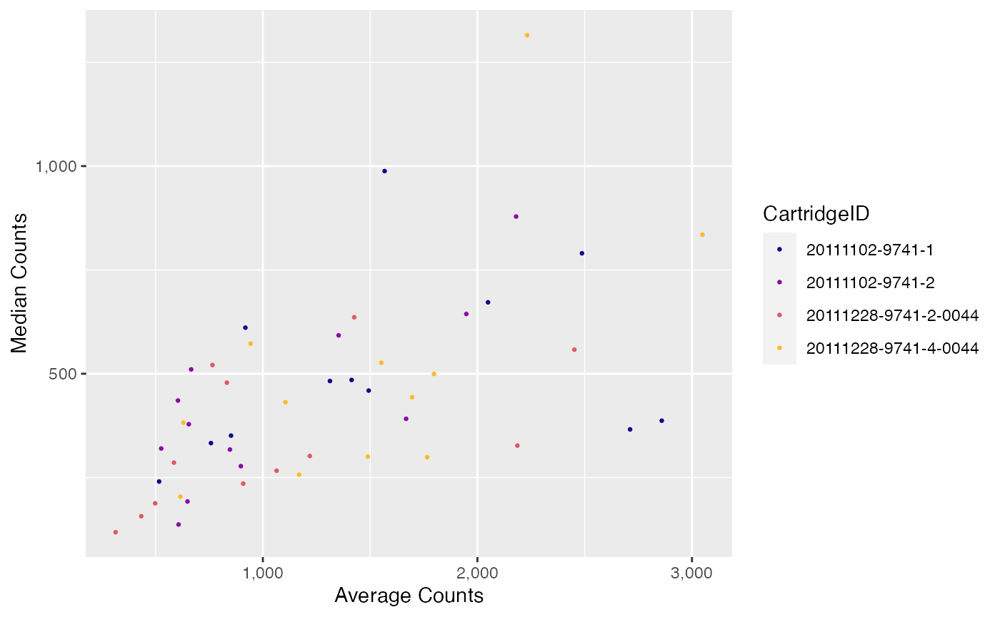
Principal Component scree plot
## Warning: `expand_scale()` is deprecated; use `expansion()` instead.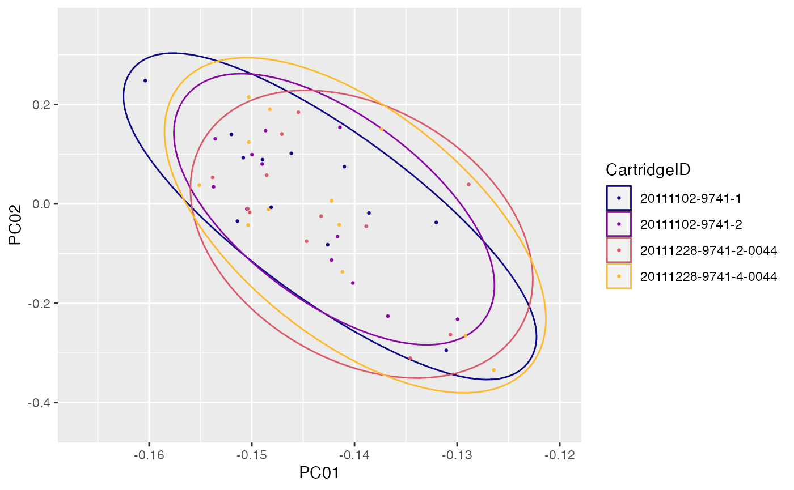
Principal Components planes
## Warning: `expand_scale()` is deprecated; use `expansion()` instead.
## Warning: `expand_scale()` is deprecated; use `expansion()` instead.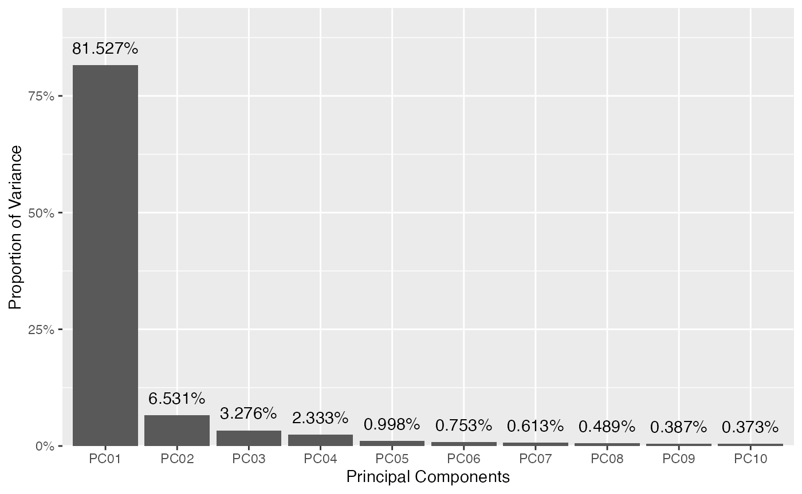
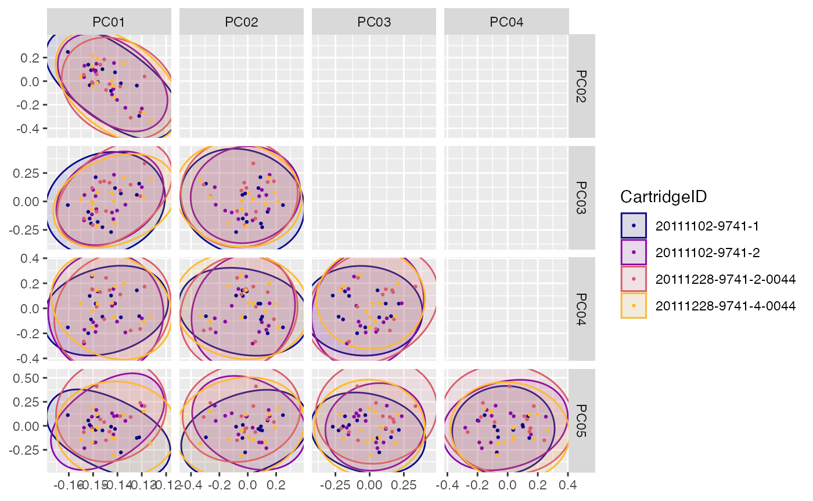
Positive Factor vs. Negative Factor
## Warning: Transformation introduced infinite values in continuous y-axis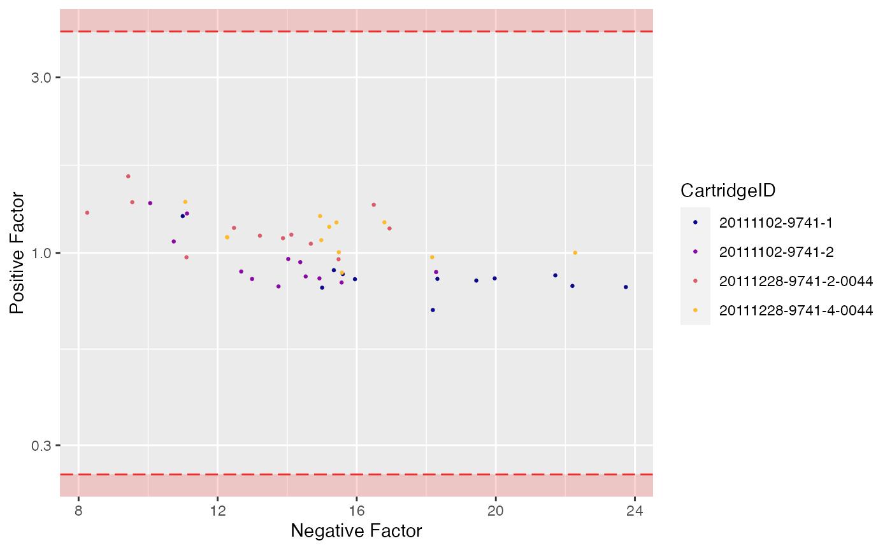
Housekeeping Factor
## Warning: Transformation introduced infinite values in continuous x-axis
## Warning: Transformation introduced infinite values in continuous x-axis
## Warning: Transformation introduced infinite values in continuous y-axis
## Warning: Transformation introduced infinite values in continuous y-axis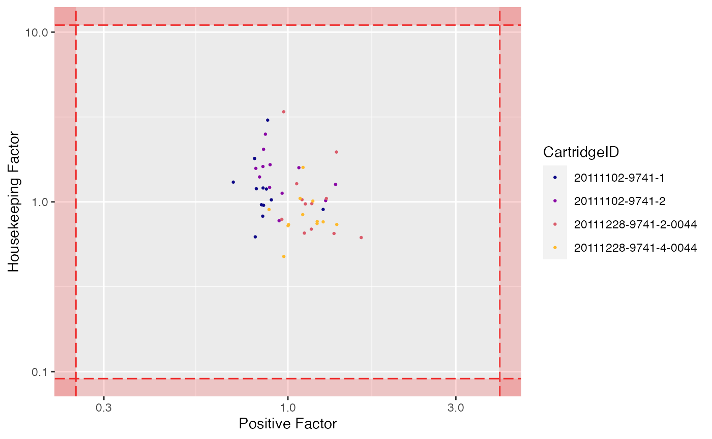
NACHO as a standalone app
NACHO is also available as a standalone app to be used in a shiny server configuration. A convenience function deploy() is available to directly copy the NACHO app to the default directory of a shiny server.
deploy(directory = "/srv/shiny-server", app_name = "NACHO")The app can also be run directly, without manually summarising and normalising RCC files:
shiny::runApp(system.file("app", package = "NACHO"))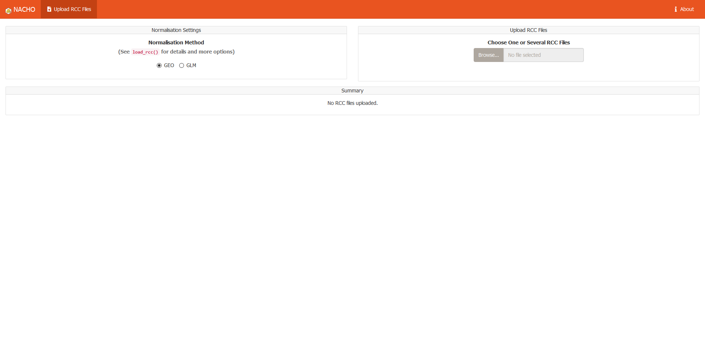
The render() function
The render() function renders (using print(..., echo = TRUE) a comprehensive HTML report which includes all quality-control metrics and description of those metrics.
render(
nacho_object = GSE74821,
colour = "CartridgeID",
output_file = "NACHO_QC.html",
output_dir = ".",
size = 0.5,
show_legend = TRUE,
clean = TRUE
)The underneath function print() can be used directly within any Rmarkdown chunk, setting the parameter echo = TRUE.
print(
x = GSE74821,
colour = "CartridgeID",
size = 0.5,
show_legend = TRUE,
echo = TRUE,
title_level = 3
)Settings
Predict housekeeping genes: FALSE
Normalise using housekeeping genes: TRUE
Housekeeping genes available: MRPL19, PSMC4, SF3A1, RPLP0, PUM1, ACTB, TFRC and GUSB
Normalise using: GLM
Principal components to compute: 10
-
Remove outliers: FALSE
- Binding Density (BD) < 0.1
- Binding Density (BD) > 2.25
- Field of View (FoV) < 75
- Positive Control Linearity (PCL) < 0.95
- Limit of Detection (LoD) < 2
- Positive normalisation factor (Positive_factor) < 0.25
- Positive normalisation factor (Positive_factor) > 4
- Housekeeping normalisation factor (house_factor) < 0.091
- Housekeeping normalisation factor (house_factor) > 11
QC Metrics
Binding Density
The imaging unit only counts the codes that are unambiguously distinguishable.
It simply will not count codes that overlap within an image.
This provides increased confidence that the molecular counts you receive are from truly recognisable codes.
Under most conditions, forgoing the few barcodes that do overlap will not impact your data.
Too many overlapping codes in the image, however, will create a condition called image saturation in which significant data loss could occur (critical data loss from saturation is uncommon).
To determine the level of image saturation, the nCounter instrument calculates the number of optical features per square micron for each lane as it processes the images.
This is called the Binding Density (BD).
The Binding Density is useful for determining whether data collection has been compromised due to image saturation. The acceptable range for Binding Density is:
-
0.1 - 2.25for MAX/FLEX instruments -
0.1 - 1.8for SPRINT instruments
Within these ranges, relatively few reporters on the slide surface will overlap, enabling the instrument to accurately tabulate counts for each reporter species.
A Binding Density significantly greater than the upper limit in either range is indicative of overlapping reporters on the slide surface.
The counts observed in lanes with a Binding Density at this level may have had significant numbers of codes ignored, which could potentially affect quantification and linearity of the assay.
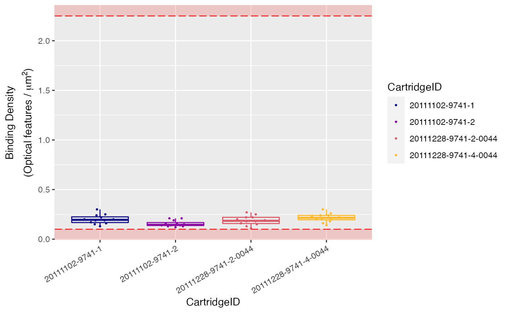
Field of View (Imaging)
Each individual lane scanned on an nCounter system is divided into a few hundred imaging sections, called Fields of View (FOV), the exact number of which will depend on the system being used (i.e., MAX/FLEX or SPRINT), and the scanner settings selected by the user.
The system images these FOVs separately, and sums the barcode counts of all FOVs from a single lane to form the final raw data count for each unique barcode target.
Finally, the system reports the number of FOVs successfully imaged as FOV Counted.
Significant discrepancy between the number of FOV for which imaging was attempted (FOV Count) and for which imaging was successful (FOV Counted) may indicate an issue with imaging performance.
Recommended percentage of registered FOVs (i.e., FOV Counted over FOV Count) is 75 %.
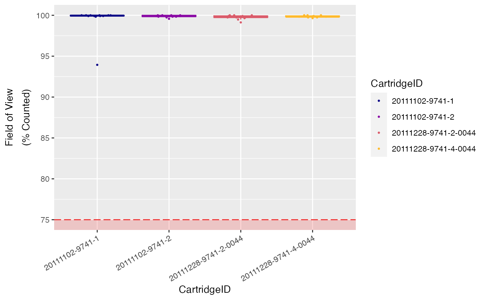
Positive Control Linearity
Six synthetic DNA control targets are included with every nCounter Gene Expression assay.
Their concentrations range linearly (in codeset) from 128 fM to 0.125 fM, and they are referred to as POS_A to POS_F, respectively.
These Positive Controls are typically used to measure the efficiency of the hybridization reaction, and their step-wise concentrations also make them useful in checking the linearity performance of the assay.
Since the known concentrations of the Positive Controls increase in a linear fashion, the resulting counts should, as well.
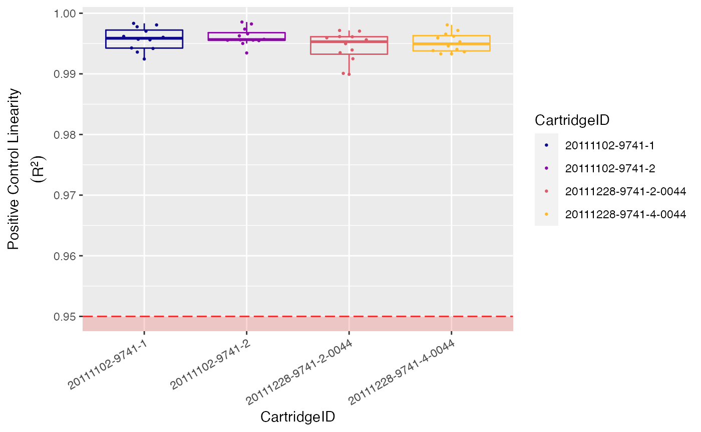
Limit of Detection
The limit of detection (LoD) is determined by measuring the ability to detect POS_E, the 0.5 fM positive control probe, which corresponds to about 10,000 copies of this target within each sample tube.
On a FLEX/MAX system, the standard input of 100 ng of total RNA will roughly correspond to about 10,000 cell equivalents (assuming one cell contains 10 pg total RNA on average).
An nCounter assay run on the FLEX/MAX system should thus conservatively be able to detect roughly one transcript copy per cell for each target (or 10,000 total transcript copies).
In most (codeset) assays, you will observe that even the POS_F probe (equivalent to 0.25 copies per cell) is detectable above background.
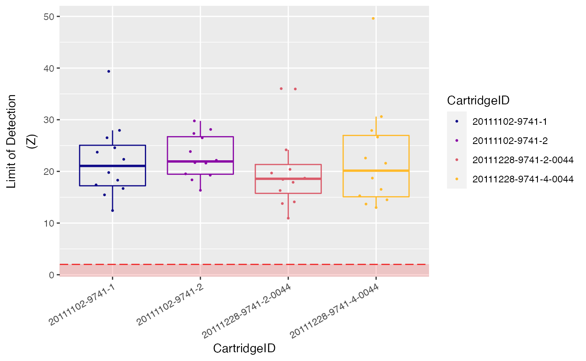
References
Barrett, Tanya, Stephen E. Wilhite, Pierre Ledoux, Carlos Evangelista, Irene F. Kim, Maxim Tomashevsky, Kimberly A. Marshall, et al. 2013. “NCBI GEO: Archive for Functional Genomics Data Sets—Update.” Nucleic Acids Research 41 (D1): D991–D995. https://doi.org/10.1093/nar/gks1193.
Bruce, Jeff P., Angela B. Y. Hui, Wei Shi, Bayardo Perez-Ordonez, Ilan Weinreb, Wei Xu, Benjamin Haibe-Kains, et al. 2015. “Identification of a microRNA Signature Associated with Risk of Distant Metastasis in Nasopharyngeal Carcinoma.” Oncotarget 6 (6): 4537–50. https://doi.org/10.18632/oncotarget.3005.
Liu, Minetta C., Brandelyn N. Pitcher, Elaine R. Mardis, Sherri R. Davies, Paula N. Friedman, Jacqueline E. Snider, Tammi L. Vickery, et al. 2016. “PAM50 Gene Signatures and Breast Cancer Prognosis with Adjuvant Anthracycline- and Taxane-Based Chemotherapy: Correlative Analysis of C9741 (Alliance).” Npj Breast Cancer 2 (January): 15023. https://doi.org/10.1038/npjbcancer.2015.23.